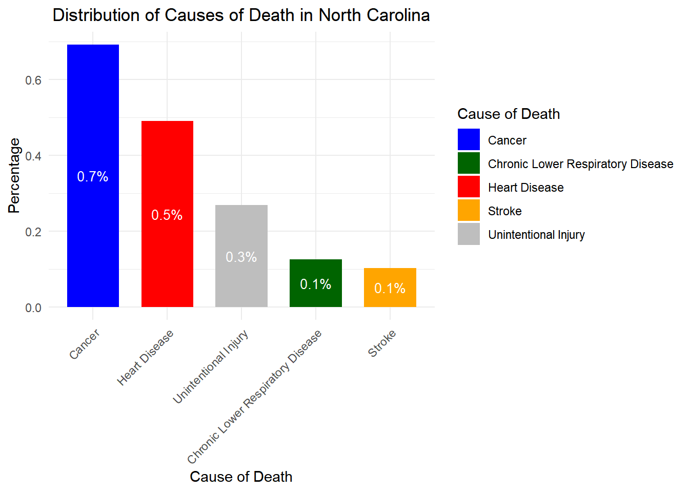

The dataset “Potentially Excess Deaths from the Five Leading Causes of Death” offers a detailed look at how many deaths in different areas of the U.S. Essentially, it highlights how many deaths occurred and what expected. In addition we are also provided with this following information:
Underlying cause of death is based on the International Classification of Diseases, and are as follows:
Percent Potentially Excess Deaths: Percentage of deaths exceeding expectations.
Loading and Cleaning the Data
We first begin by loading and cleaning the dataset.
# Load necessary librarieslibrary(tidyverse)
Warning: package 'ggplot2' was built under R version 4.3.3
── Attaching core tidyverse packages ──────────────────────── tidyverse 2.0.0 ──
✔ dplyr 1.1.2 ✔ readr 2.1.4
✔ forcats 1.0.0 ✔ stringr 1.5.0
✔ ggplot2 3.5.1 ✔ tibble 3.2.1
✔ lubridate 1.9.2 ✔ tidyr 1.3.0
✔ purrr 1.0.2
── Conflicts ────────────────────────────────────────── tidyverse_conflicts() ──
✖ dplyr::filter() masks stats::filter()
✖ dplyr::lag() masks stats::lag()
ℹ Use the conflicted package (<http://conflicted.r-lib.org/>) to force all conflicts to become errors
library(readr)library(RColorBrewer)library(dplyr)library(ggplot2)# Set the working directory to the project directorysetwd('C:/Users/Joaquin/School/DA - 6833 (Summer 2024)/Joaquin_Ramriez_Portfolio_II/cdcdata-exercise')# Define the file path and load the datadata <-read_csv("NCHS_-_Five_Leading_Causes_of_Death.csv")
Rows: 205920 Columns: 13
── Column specification ────────────────────────────────────────────────────────
Delimiter: ","
chr (6): Cause of Death, State, State FIPS Code, Age Range, Benchmark, Locality
dbl (7): Year, HHS Region, Observed Deaths, Population, Expected Deaths, Pot...
ℹ Use `spec()` to retrieve the full column specification for this data.
ℹ Specify the column types or set `show_col_types = FALSE` to quiet this message.
Year Cause of Death
0 0
State State FIPS Code
0 0
HHS Region Age Range
0 0
Benchmark Locality
0 0
Observed Deaths Population
10212 5280
Expected Deaths Potentially Excess Deaths
10212 10212
Percent Potentially Excess Deaths
10212
cat("\n\n")
# Remove rows with NA valuesdata_cleaned <- data %>%drop_na()# Display the structure of the cleaned datasetstr(data_cleaned)
tibble [195,708 × 13] (S3: tbl_df/tbl/data.frame)
$ Year : num [1:195708] 2005 2005 2005 2005 2005 ...
$ Cause of Death : chr [1:195708] "Cancer" "Cancer" "Cancer" "Cancer" ...
$ State : chr [1:195708] "Alabama" "Alabama" "Alabama" "Alabama" ...
$ State FIPS Code : chr [1:195708] "AL" "AL" "AL" "AL" ...
$ HHS Region : num [1:195708] 4 4 4 4 4 4 4 4 4 4 ...
$ Age Range : chr [1:195708] "0-49" "0-49" "0-49" "0-49" ...
$ Benchmark : chr [1:195708] "2005 Fixed" "2005 Fixed" "2005 Fixed" "2010 Fixed" ...
$ Locality : chr [1:195708] "All" "Metropolitan" "Nonmetropolitan" "All" ...
$ Observed Deaths : num [1:195708] 756 556 200 756 556 ...
$ Population : num [1:195708] 3148377 2379871 768506 3148377 2379871 ...
$ Expected Deaths : num [1:195708] 451 341 111 421 318 103 451 341 111 784 ...
$ Potentially Excess Deaths : num [1:195708] 305 217 89 335 238 97 305 217 89 562 ...
$ Percent Potentially Excess Deaths: num [1:195708] 40.3 39 44.5 44.3 42.8 48.5 40.3 39 44.5 41.8 ...
Visualizations and Exploratory Data Analysis
1) Summary statistics for variables.
# Summary statistics for data summary(data)
Year Cause of Death State State FIPS Code
Min. :2005 Length:205920 Length:205920 Length:205920
1st Qu.:2007 Class :character Class :character Class :character
Median :2010 Mode :character Mode :character Mode :character
Mean :2010
3rd Qu.:2013
Max. :2015
HHS Region Age Range Benchmark Locality
Min. : 0.000 Length:205920 Length:205920 Length:205920
1st Qu.: 3.000 Class :character Class :character Class :character
Median : 5.000 Mode :character Mode :character Mode :character
Mean : 5.231
3rd Qu.: 8.000
Max. :10.000
Observed Deaths Population Expected Deaths
Min. : 10 Min. : 55536 Min. : 2
1st Qu.: 155 1st Qu.: 682826 1st Qu.: 92
Median : 508 Median : 1610936 Median : 298
Mean : 2975 Mean : 7008421 Mean : 2113
3rd Qu.: 1586 3rd Qu.: 4681585 3rd Qu.: 1019
Max. :493526 Max. :315131659 Max. :465126
NA's :10212 NA's :5280 NA's :10212
Potentially Excess Deaths Percent Potentially Excess Deaths
Min. : 0.0 Min. : 0.00
1st Qu.: 41.0 1st Qu.:20.90
Median : 159.0 Median :35.80
Mean : 875.1 Mean :35.73
3rd Qu.: 543.0 3rd Qu.:50.10
Max. :175703.0 Max. :85.30
NA's :10212 NA's :10212
cat("\n\n")
# Summary statistics for cleaned datasummary(data_cleaned)
Year Cause of Death State State FIPS Code
Min. :2005 Length:195708 Length:195708 Length:195708
1st Qu.:2007 Class :character Class :character Class :character
Median :2010 Mode :character Mode :character Mode :character
Mean :2010
3rd Qu.:2013
Max. :2015
HHS Region Age Range Benchmark Locality
Min. : 0.0 Length:195708 Length:195708 Length:195708
1st Qu.: 3.0 Class :character Class :character Class :character
Median : 5.0 Mode :character Mode :character Mode :character
Mean : 5.3
3rd Qu.: 8.0
Max. :10.0
Observed Deaths Population Expected Deaths
Min. : 10 Min. : 55536 Min. : 2
1st Qu.: 155 1st Qu.: 724049 1st Qu.: 92
Median : 508 Median : 1704462 Median : 298
Mean : 2975 Mean : 7177289 Mean : 2113
3rd Qu.: 1586 3rd Qu.: 4783958 3rd Qu.: 1019
Max. :493526 Max. :315131659 Max. :465126
Potentially Excess Deaths Percent Potentially Excess Deaths
Min. : 0.0 Min. : 0.00
1st Qu.: 41.0 1st Qu.:20.90
Median : 159.0 Median :35.80
Mean : 875.1 Mean :35.73
3rd Qu.: 543.0 3rd Qu.:50.10
Max. :175703.0 Max. :85.30
2) Visualization of trends over time for causes of death.
# Define a color palettecolors <-c("Heart Disease"="red", "Cancer"="blue", "Chronic Lower Respiratory Disease"="darkgreen", "Stroke"="orange", "Unintentional Injury"="grey")# Aggregate data by Year and Cause of Death, excluding "United States"annual_totals <- data_cleaned %>%filter(State !="United States") %>%group_by(Year, `Cause of Death`) %>%summarize(Total_Observed_Deaths =sum(`Observed Deaths`, na.rm =TRUE), .groups ='drop')# Create the time series line plot with thicker lines and formatted year labelsggplot(annual_totals, aes(x = Year, y = Total_Observed_Deaths, color =`Cause of Death`, group =`Cause of Death`)) +geom_line(linewidth =1.2) +# Use 'linewidth' for line thicknessgeom_point(size =2) +# Optionally, adjust point sizescale_x_continuous(breaks =seq(min(annual_totals$Year), max(annual_totals$Year), by =1), # Ensure years are whole numberslabels = scales::label_number(big.mark ="")) +# Format year labels as whole numbersscale_color_manual(values = colors) +# Apply custom colorslabs(title ="Deaths Over Time by Cause of Death",x ="Year",y ="Total Observed Deaths") +# y-axis labeltheme_minimal() +theme(legend.position ="bottom", # Adjust legend position if necessarylegend.title =element_blank(), # Remove legend titlelegend.key.width =unit(0.5, "cm"), # Adjust legend key widthlegend.key.height =unit(0.5, "cm"), # Adjust legend key heightlegend.text =element_text(size =10)) # Adjust legend text size
Causes of Death:
Cancer: This is the leading cause of death according to the graph, and the number of deaths has been slowly increasing over time. There appears to be a slight acceleration in the rate of increase in recent years.
Heart Disease: Heart disease is the second leading cause of death. The number of deaths due to heart disease has fluctuated somewhat over the years, but there is a general downward trend from 2008 to 2013. Since then, there has been a slight uptick.
Unintentional Injuries: Unintentional injuries are the third leading cause of death according to the graph. The number deaths due to unintentional injuries has been increasing steadily over time.
Chronic Lower Respiratory Disease and Stroke: Chronic lower respiratory disease and stroke have the two lowest numbers of deaths depicted in the graph. The number of deaths due to these causes appears to be relatively stable.
3) Visualization: Causes of Death over time (Percentages).
# Aggregate total observed deaths by Year and Cause of Death, excluding "United States"annual_totals <- data_cleaned %>%filter(State !="United States") %>%group_by(Year, `Cause of Death`) %>%summarize(Total_Observed_Deaths =sum(`Observed Deaths`, na.rm =TRUE), .groups ='drop')# Calculate total deaths by Yeartotal_deaths_by_year <- annual_totals %>%group_by(Year) %>%summarize(Total_Deaths =sum(Total_Observed_Deaths, na.rm =TRUE))# Merge the total deaths with the annual totals to calculate percentagesannual_totals_with_percentages <- annual_totals %>%left_join(total_deaths_by_year, by ="Year") %>%mutate(Percentage_of_Deaths = (Total_Observed_Deaths / Total_Deaths) *100)# Reorder the Cause of Death factor levels based on total percentageannual_totals_with_percentages <- annual_totals_with_percentages %>%mutate(`Cause of Death`=reorder(`Cause of Death`, Percentage_of_Deaths, FUN = sum))# Create a bar plot with percentages and labels, with reordered barsggplot(annual_totals_with_percentages, aes(x = Year, y = Percentage_of_Deaths, fill =`Cause of Death`)) +geom_bar(stat ="identity", position ="stack") +# Stacked bar plotgeom_text(aes(label =sprintf("%.1f%%", Percentage_of_Deaths), y = Percentage_of_Deaths), position =position_stack(vjust =0.5), size =3.5, color ="white") +# Add percentage labels inside barslabs(title ="Percentage of Observed Deaths by Cause of Death Over Time", # Update titlex ="Year",y ="Percentage of Total Deaths") +scale_x_continuous(breaks =seq(min(annual_totals_with_percentages$Year), max(annual_totals_with_percentages$Year), by =1), labels = scales::label_number(big.mark ="")) +# Format year labelsscale_fill_manual(values = colors) +# Apply custom colorstheme_minimal() +theme(legend.position ="bottom", # Adjust legend position if necessarylegend.title =element_blank(), # Remove legend titlelegend.key.width =unit(0.5, "cm"), # Adjust legend key widthlegend.key.height =unit(0.5, "cm"), # Adjust legend key heightlegend.text =element_text(size =10)) # Adjust legend text size
Percentage of Deaths Over Time:
Cancer is the leading cause of death in the United States, representing around 40% of total deaths from the top 5 causes.
Heart Disease is the second leading cause of death (after cancer). The graph shows a slight decrease in the percentage of deaths due to heart disease over time.
Unintentional Injuries the graph shows a slight increase in the percentage of deaths due to unintentional injuries, meaning more deaths have occurred from unintentional causes over time.
Chronic Lower Respiratory Disease the graph suggests a slight increase in deaths due to chronic lower respiratory disease.
Stroke appears to have the lowest percentage of deaths among the top causes depicted in the graph. The percentage has remained relatively stable over time, with a possible slight decrease.
Overall, the graph shows the percentage of deaths by cause over time. The leading causes of death are cancer and heart disease, but the percentage of deaths due to these causes is slowly decreasing. Deaths due to unintentional injuries show a slight upward trend, while chronic lower respiratory disease and stroke show a stable or slightly increasing percentage of deaths.
4) Visualization: Causes of death by state.
# Exclude rows where State is "United States" and Total_Observed_Deaths is below 650,000state_observed_deaths <- data_cleaned %>%filter(State !="United States") %>%group_by(State) %>%summarize(Total_Observed_Deaths =sum(`Observed Deaths`, na.rm =TRUE)) %>%filter(Total_Observed_Deaths >=650000) %>%# Filter out states with less than 650,000 observed deathsarrange(desc(Total_Observed_Deaths))# Plotting the state-wise distribution of observed deaths excluding United Statesggplot(state_observed_deaths, aes(x =reorder(State, -Total_Observed_Deaths), y = Total_Observed_Deaths)) +geom_bar(stat ="identity", fill ="skyblue", width =0.7) +# Adjust bar width as neededlabs(title ="Total Observed Deaths by State (Excluding United States)",x ="State",y ="Total Observed Deaths") +theme_minimal() +theme(axis.text.x =element_text(angle =90, hjust =1, size =7)) # Adjust angle and size
Here are the top ten states with the most deaths according to the graph:
California
Texas
Florida 4.New York
Pennsylvania
Ohio
Illinois
Michigan
North Carolina
Georgia
Intrigued by this, we will now dive deeper and explore the leading cause of death in these top 10 states. This will help provide and understanding mortality patterns across the country.
# Specify the states of intereststates_of_interest <-c("California", "Texas", "Florida", "New York", "Pennsylvania", "Ohio", "Illinois", "Michigan", "North Carolina", "Georgia")# Filter data for specified states and calculate percentages by cause of deathstate_cause_percentages <- data_cleaned %>%filter(State %in% states_of_interest) %>%group_by(State, `Cause of Death`) %>%summarize(Percentage =sum(`Observed Deaths`) /sum(data_cleaned$`Observed Deaths`) *100, .groups ='drop') %>%arrange(State, desc(Percentage)) # Arrange by State and descending Percentage# Plotting separate bar plots for each state showing percentage distribution of causes of deathplots_list <-lapply(states_of_interest, function(state) { state_data <- state_cause_percentages %>%filter(State == state) %>%arrange(desc(Percentage)) # Sort within each state from highest to lowest percentageggplot(state_data, aes(x =reorder(`Cause of Death`, -Percentage), y = Percentage, fill =`Cause of Death`)) +geom_bar(stat ="identity", width =0.7) +# Bar plotgeom_text(aes(label =sprintf("%.1f%%", Percentage), y = Percentage), position =position_stack(vjust =0.5), size =3.5, color ="white") +# Add percentage labels inside barslabs(title =paste("Distribution of Causes of Death in", state),x ="Cause of Death",y ="Percentage") +scale_fill_manual(values = colors) +# Apply custom colorstheme_minimal() +theme(axis.text.x =element_text(angle =45, hjust =1), # Rotate x-axis labels if neededplot.title =element_text(hjust =0.5)) # Center title horizontally})# Print each plot separatelyfor (i inseq_along(plots_list)) {print(plots_list[[i]])}

California
Cancer: 2%
Heart Disease: 1.4%
Unintentional Injury: 0.7%
Chronic Lower Respiratory Disease: 0.3%
Stroke: 0.3%
Texas
Cancer: 1.4%
Heart Disease: 1.1%
Unintentional Injury: 0.6%
Chronic Lower Respiratory Disease: 0.2%
Stroke:0.2%
Florida
Cancer: 1.4%
Heart Disease: 1.0%
Unintentional Injury: 0.5%
Chronic Lower Respiratory Disease:0.2%
Stroke: 0.2%
4.New York:
Cancer: 1.3%
Heart Disease: 0.9%
Unintentional Injury: 0.3%
Chronic Lower Respiratory Disease: 0.2%
Stroke: 0.1%
Pennsylvania
Cancer: 1.0%
Heart Disease: 0.7%
Unintentional Injury: 0.4%
Chronic Lower Respiratory Disease: 0.1%
Stroke: 0.1%
Ohio
Cancer: 0.9%
Heart Disease: 0.7%
Unintentional Injury: 0.3%
Chronic Lower Respiratory Disease: 0.2%
Stroke: 0.1%
Illinois
Cancer: 0.9%
Heart Disease: 0.6%
Unintentional Injury: 0.3%
Chronic Lower Respiratory Disease: 0.1%
Stroke: 0.1%
Michigan
Cancer: 0.7%
Heart Disease: 0.6%
Unintentional Injury: 0.2%
Chronic Lower Respiratory Disease: 0.1%
Stroke: 0.1%
North Carolina
Cancer: 0.7%
Heart Disease: 0.5%
Unintentional Injury: 0.3%
Chronic Lower Respiratory Disease: 0.1%
Stroke: 0.1%
Georgia
Cancer: 0.6%
Heart Disease: 0.5%
Unintentional Injury: 0.3%
Chronic Lower Respiratory Disease: 0.1%
Stroke: 0.1%
Conclusion:
The analysis of data from 2005 to 2015 reveals that Cancer is the leading cause of death, steadily rising over the years. Heart Disease follows, showing a slight decrease until 2013, and then a slight increase. Unintentional Injuries are continuously rising, presenting a growing public health concern. State-wise, California, Texas, and Florida report the highest number of deaths, with Cancer and Heart Disease consistently ranking at the top across all states analyzed.
Although deaths from Chronic Lower Respiratory Disease and Stroke remained stable from 2005 to 2015, any small increases in these areas should be watched closely to prevent them from becoming bigger health problems. The steady rise in deaths from Unintentional Injuries shows a need for targeted public health efforts and preventive measures to reduce these incidents. The state-by-state analysis reveals that Cancer and Heart Disease are the leading causes of death in all states, but the differences between states might be influenced by other factors. The visualizations and summary statistics highlight important trends and patterns and are valuable tools for policymakers.
Future research could look into underlying factors like demographics, policies, and access to affordable healthcare behind the trends seen in Cancer, Heart Disease, and Unintentional Injuries. A deeper understanding of these factors can lead to better health policies and interventions.